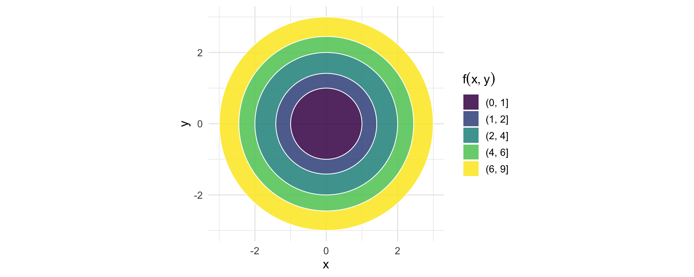
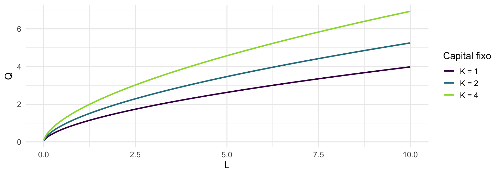
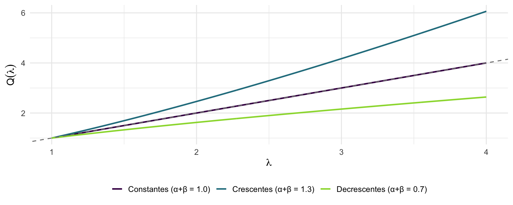
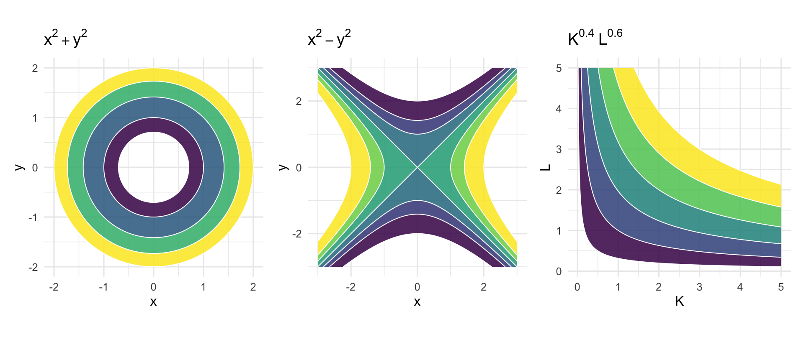
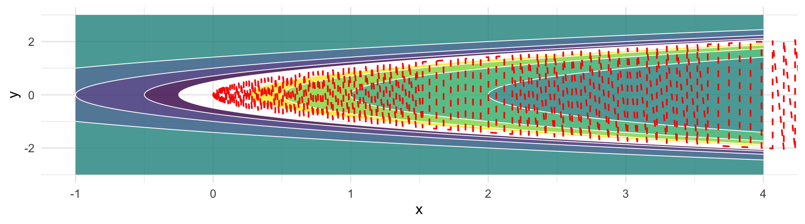

Matemática para Doutorado em Economia — EPGE/FGV
Professora: Silvia Matos
Em Economia, quase todas as relações de interesse dependem de múltiplos fatores simultaneamente:
Objetivo: generalizar o conceito de função para o caso de várias variáveis.
Uma função de várias variáveis reais associa a cada vetor \((x_1, \ldots, x_n) \in \mathbb{R}^n\) um único escalar \(z \in \mathbb{R}\):
\[f : D \subseteq \mathbb{R}^n \longrightarrow \mathbb{R}, \quad (x_1, \ldots, x_n) \mapsto z = f(x_1, \ldots, x_n)\]
O caso mais comum em Economia é \(n = 2\):
\[f : D \subseteq \mathbb{R}^2 \longrightarrow \mathbb{R}, \quad (x, y) \mapsto z = f(x, y)\]
O gráfico de \(f\) é uma superfície no espaço \(\mathbb{R}^3\).
| Conceito | Definição |
|---|---|
| Domínio \(D\) | Conjunto de pontos onde \(f\) está definida |
| Imagem \(\mathrm{Im}(f)\) | Conjunto de valores assumidos por \(f\) |
| Gráfico | \(\{(x_1,\ldots,x_n, z) : z = f(x_1,\ldots,x_n),\; \mathbf{x} \in D\}\) |
Firma com dois insumos de preços \(w_1 = 3\) e \(w_2 = 5\):
\[C(x_1, x_2) = 3x_1 + 5x_2\]
| \(x_1\) | \(x_2\) | \(C\) |
|---|---|---|
| 0 | 0 | 0 |
| 2 | 0 | 6 |
| 0 | 2 | 10 |
| 2 | 3 | 21 |
| 4 | 4 | 32 |
\[x_2 = \frac{\bar{C}}{5} - \frac{3}{5}\,x_1\]
\[\boxed{Q = f(K, L) = A \, K^{\alpha} \, L^{\beta}}\]
| Parâmetro | Interpretação |
|---|---|
| \(A > 0\) | Produtividade total dos fatores |
| \(\alpha \in (0,1)\) | Elasticidade do produto em relação a \(K\) |
| \(\beta \in (0,1)\) | Elasticidade do produto em relação a \(L\) |
Fixando \(K = \bar{K}\), a função reduz-se a uma variável:
\[Q(L) = A\,\bar{K}^{\alpha}\, L^{\beta}\]
Para \(\beta \in (0,1)\): função crescente e côncava — produto marginal decrescente do trabalho.

Multiplicando todos os insumos por \(\lambda > 0\):
\[f(\lambda K,\, \lambda L) = \lambda^{\alpha+\beta}\, f(K,L)\]
| Condição | Retornos |
|---|---|
| \(\alpha + \beta = 1\) | Constantes |
| \(\alpha + \beta > 1\) | Crescentes |
| \(\alpha + \beta < 1\) | Decrescentes |

Dada \(f : D \subseteq \mathbb{R}^2 \to \mathbb{R}\), a curva de nível de valor \(c\) é:
\[\mathcal{C}_c = \bigl\{(x, y) \in D : f(x, y) = c\bigr\}\]
Interpretação: projeção no plano \(xy\) da interseção do gráfico de \(f\) com o plano horizontal \(z = c\).
Em Economia: as curvas de nível da função de produção são as isoquantas.

Domínio: \(D = \mathbb{R}^2\)
Imagem: \([0, +\infty)\)
Curvas de nível: \[x^2 + y^2 = c \quad (c \geq 0)\] Circunferências de raio \(\sqrt{c}\) centradas na origem.
Gráfico: paraboloide elíptico.

Domínio: \(D = \mathbb{R}^2 \setminus \{x = y^2\}\) — exclui a parábola \(x = y^2\).
Imagem: \(\mathbb{R} \setminus \{0\}\)
Curvas de nível (\(f = c \neq 0\)):
\[x = y^2 + \frac{1}{c}\]
Parábolas deslocadas da fronteira por \(1/c\).

A derivada parcial de \(f\) em relação a \(x\) no ponto \((x_0, y_0)\):
\[\frac{\partial f}{\partial x}(x_0, y_0) = \lim_{h \to 0} \frac{f(x_0 + h,\, y_0) - f(x_0, y_0)}{h}\]
Ideia: congelar uma variável e diferenciar em relação à outra — exatamente como na derivada univariada.
Interpretação geométrica: inclinação da curva obtida pela interseção do gráfico de \(f\) com o plano \(y = y_0\).
| \(f(x,y)\) | \(\partial f/\partial x\) | \(\partial f/\partial y\) |
|---|---|---|
| \(x^2 + y^2\) | \(2x\) | \(2y\) |
| \(x^2 - y^2\) | \(2x\) | \(-2y\) |
| \(\frac{1}{x-y^2}\) | \(-\frac{1}{(x-y^2)^2}\) | \(\frac{2y}{(x-y^2)^2}\) |
Cobb-Douglas \(f(K,L) = AK^\alpha L^\beta\):
\[\frac{\partial f}{\partial K} = \frac{\alpha Q}{K} \quad \text{(Produto Marginal do Capital)}\]
\[\frac{\partial f}{\partial L} = \frac{\beta Q}{L} \quad \text{(Produto Marginal do Trabalho)}\]
Na Cobb-Douglas, \(\alpha\) e \(\beta\) são as elasticidades do produto:
\[\frac{\partial \ln Q}{\partial \ln K} = \alpha, \qquad \frac{\partial \ln Q}{\partial \ln L} = \beta\]
Um aumento de 1% em \(K\), mantendo \(L\) fixo, eleva \(Q\) em \(\alpha\)%.
Quatro derivadas de segunda ordem de \(f(x,y)\):
\[f_{xx} = \frac{\partial^2 f}{\partial x^2}, \quad f_{yy} = \frac{\partial^2 f}{\partial y^2}, \quad f_{xy} = \frac{\partial^2 f}{\partial x\,\partial y}, \quad f_{yx} = \frac{\partial^2 f}{\partial y\,\partial x}\]
Teorema de Young: se \(f_{xy}\) e \(f_{yx}\) são contínuas em \((x_0, y_0)\), então:
\[\boxed{f_{xy}(x_0, y_0) = f_{yx}(x_0, y_0)}\]
A ordem de diferenciação é irrelevante — reduz 4 derivadas para 3.
Todas as derivadas de segunda ordem organizam-se na Hessiana:
\[H_f(x,y) = \begin{pmatrix} f_{xx} & f_{xy} \\ f_{yx} & f_{yy} \end{pmatrix}\]
Pelo Teorema de Young, \(H_f\) é simétrica quando as derivadas mistas são contínuas.
Cobb-Douglas (\(f_{KK} < 0\) e \(f_{LL} < 0\) para \(\alpha, \beta \in (0,1)\)):
\[H_f = \begin{pmatrix} \alpha(\alpha-1)AK^{\alpha-2}L^{\beta} & \alpha\beta AK^{\alpha-1}L^{\beta-1} \\ \alpha\beta AK^{\alpha-1}L^{\beta-1} & \beta(\beta-1)AK^{\alpha}L^{\beta-2} \end{pmatrix}\]
Produto marginal decrescente de cada insumo.
| Conceito | Resultado-chave |
|---|---|
| Função \(f: \mathbb{R}^2 \to \mathbb{R}\) | Superfície no \(\mathbb{R}^3\) |
| Curvas de nível | Cortes horizontais do gráfico |
| Derivada parcial | Derivada univariada com a outra variável fixada |
| Teorema de Young | \(f_{xy} = f_{yx}\) (sob continuidade) |
| Hessiana | Matriz simétrica das derivadas de segunda ordem |
| Retornos de escala | Determinados por \(\alpha + \beta\) na Cobb-Douglas |
Matemática — EPGE/FGV | 2026.1